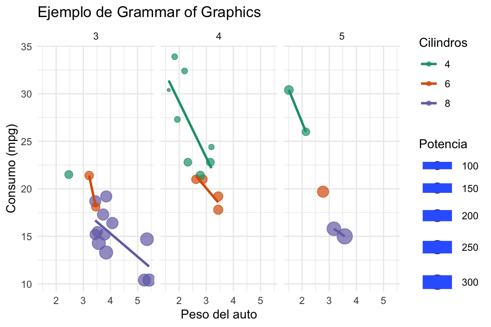
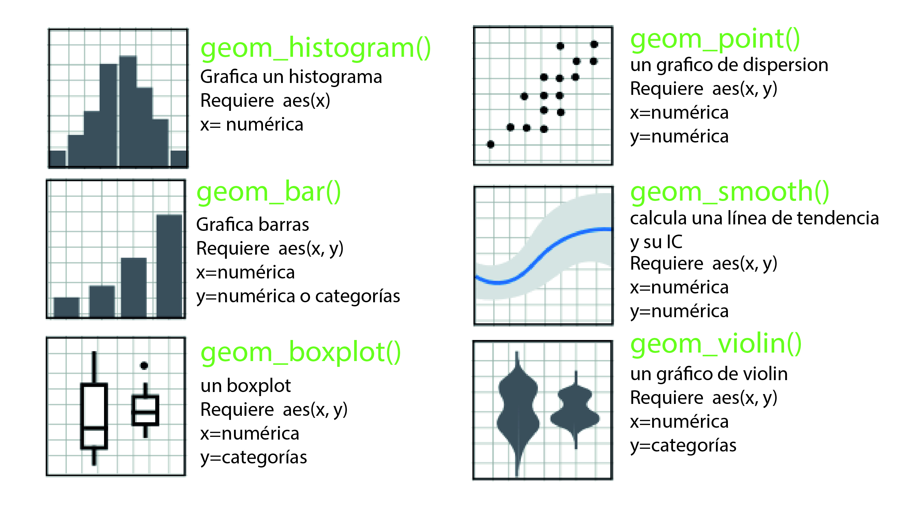
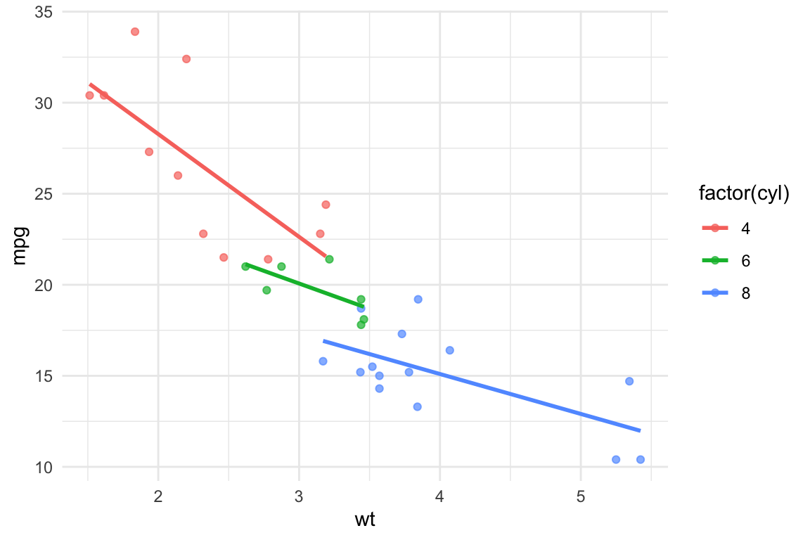
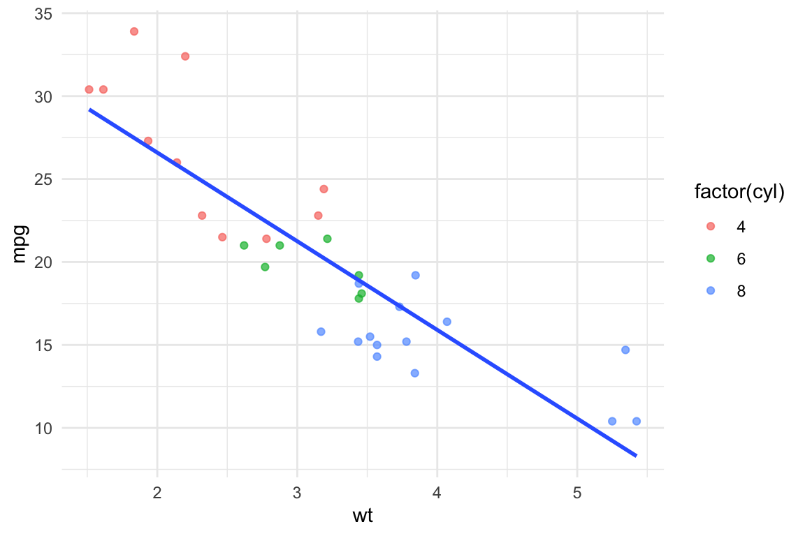

1 R y el tidyverse
En la gran mayoría de los ejemplos y ejercicios de este libro vamos a usar una computadora (te quiero mucho Skynet ♥️). Con ella nos vamos a comunicar utilizando un lenguaje de programación muy popular en el campo de la estadística: R(R Core Team 2023). Por eso, mi primera recomendación es que instales R y RStudio. RStudio es una interfaz muy popular utilizada para, mayormente, programar en R1. En el recuadro siguiente van a encontrar información sobre cómo instalar ambas cosas.
1 Sin embargo, recientemente Posit, la compañía que desarrolla y mantiene RStudio, presentó una nueva interfaz multilenguaje (R, Python y Julia) llamada Positron que si, están familiarizados con Visual Studio Code, les recomiendo que prueben.
Lo primero que hay que hacer para poder correr scripts de R es, como resulta evidente, instalar R. Lo pueden hacer seleccionando su sistema operativo en este link y siguiendo los pasos de la instalación.
Pueden bajar la versión gratuita de RStudio del siguiente link. En caso de que el link no haya detectado correctamente el sistema operativo, en la sección All Installers pueden seleccionarlo manualmente. Una vez descargado el instalador sólo hay que seguir los pasos de intalación.
Si bien la mayoría de las cosas que vamos a hacer en este libro se pueden hacer con funciones de R base2, la propuesta es utilizar los paquetes y funciones del tidyverse. El tidyverse es una colección de paquetes diseñados para el campo de la ciencia de datos y que comparten una filosofía de diseño subyacente, una gramática y una estructura de datos(Wickham et al. 2019). Tranquilos que en la sección siguiente se va a ir aclarando la cosa.
2 Es decir, sin tener que cargar ningún paquete de funciones adicional.
1.1 Tidy data
Lo primero que tenemos que pensar cuando trabajamos con el tidyverse es que nuestros datos estén en formato tidy. ¿Qué significa esto? Cuando un dataset está en formato tidy, cada columna corresponde a una variable y cada fila a una única observación3. Veamos un ejemplo. Tenemos tres sujetos a los cuales les medimos el tiempo de respuesta en una tarea. Cada sujeto realiza dos repeticiones de esta medición, el trial 1 y el trial 2. En la tabla Tabla tbl-ejemplo podemos ver las dos formas de organizar esta información.
3 El caso contrario sería en el que una fila contiene varios mediciones para distintos niveles de una variable. Este formato se conoce como wide.
Tabla 1.1: Ejemplo de tablas tidy y wide.
| sujeto | trial | tiempo_respuesta |
|---|---|---|
| Jerry | 1 | 0.0807501 |
| Jerry | 2 | 0.8343330 |
| Elaine | 1 | 0.6007609 |
| Elaine | 2 | 0.1572084 |
| George | 1 | 0.0073994 |
| George | 2 | 0.4663935 |
| sujeto | trial_1 | trial_2 |
|---|---|---|
| Jerry | 0.4977774 | 0.7725215 |
| Elaine | 0.2897672 | 0.8746007 |
| George | 0.7328820 | 0.1749406 |
A lo largo de este capítulo exploraremos los beneficios de almacenar los datos en formato tidy. Por supuesto, estas ventajas tienen su precio: el tamaño de las bases de datos crece mucho si tenemos muchas medidas repetidas con distintos valores de las variables.
1.2 Introducción al Tidyverse
Como contamos más arriba, el tidyverse es una colección de cerca de 25 paquetes. Todos ellos están relacionados con la carga, manejo, modificación y visualización de datos. La idea de este libro no es profundizar en todas sus capacidades, pero consideramos importante presentar algunas de las funciones que más vamos a utilizar a lo largo de los capítulos. Estas son funciones para leer datos del paquete {readr}, los verbos de {dplyr} para manipularlos, las funciones de {tidyR} para acomodarlos y el poderosísimo {ggplot2} para visualizarlos.
1.2.1 Cargando datos con readr
Una de las cosas que vamos a hacer más a menudo en este libro es cargar algún dataset. Para esto vamos a usar varias de las funcionalidades del paquete {readr}.
El caso más simple al que nos vamos a enfrentar es la carga de una base de datos organizada en columnas y separadas por comas en un archivo de extensión .csv. En este caso, lo que tenemos que hacer es bastante simple: usar la función read_csv() como se muestra a continuación.
summer <- read_csv("../data/summer.csv")Podemos ver que al cargar los datos read_csv nos dice que hay ocho columnas chr (o sea, de texto) y una dbl (o sea, un número). Si usamos la función summary podemos ver un detalle de cada variable con su tipo y alguna descripción4:
4 Existen alternativas para visualizar rápidamente un conjunto de datos como str o glimpse o la función skim del paquete {skimr}.
summary(summer)
#> Year City Sport Discipline
#> Min. :1896 Length:31165 Length:31165 Length:31165
#> 1st Qu.:1948 Class :character Class :character Class :character
#> Median :1980 Mode :character Mode :character Mode :character
#> Mean :1970
#> 3rd Qu.:2000
#> Max. :2012
#> Athlete Country Gender Event
#> Length:31165 Length:31165 Length:31165 Length:31165
#> Class :character Class :character Class :character Class :character
#> Mode :character Mode :character Mode :character Mode :character
#>
#>
#>
#> Medal
#> Length:31165
#> Class :character
#> Mode :character
#>
#>
#> Los datos que se encuentran dentro de summer.csv son los ganadores de medallas en los juegos olímpicos de verano. Podemos ver algunas filas de muestra:
head(summer)
#> # A tibble: 6 × 9
#> Year City Sport Discipline Athlete Country Gender
#> <dbl> <chr> <chr> <chr> <chr> <chr> <chr>
#> 1 1896 Athens Aquatics Swimming HAJOS, Alfred HUN Men
#> 2 1896 Athens Aquatics Swimming HERSCHMANN, Otto AUT Men
#> 3 1896 Athens Aquatics Swimming DRIVAS, Dimitrios GRE Men
#> 4 1896 Athens Aquatics Swimming MALOKINIS, Ioannis GRE Men
#> 5 1896 Athens Aquatics Swimming CHASAPIS, Spiridon GRE Men
#> 6 1896 Athens Aquatics Swimming CHOROPHAS, Efstathios GRE Men
#> # ℹ 2 more variables: Event <chr>, Medal <chr>El formato en el que read_csv almacena los datos se llama tibble y es el formato por excelencia del tidyverse. De momento lo único que nos importa es que es un formato que almacena los casos en filas y las variables en columnas (cada variable tiene un formato). Para más información sobre las cualidades de este formato, les recomendamos revisar la documentación del paquete {tibble}.
1.2.2 El operador pipe (|>) del paquete {magrittr}
El operador pipe nos permite concatenar funciones que utilizan como entrada los mismos datos. El principio de operación es el siguiente: supongan que queremos cargar un dataset y aplicarle la función summary. Esto lo podemos hacer simplemente cargando el dataset en una lìnea de código y ejecutanco la función summary() de la siguiente forma:
data <- read_csv("../data/summer.csv")
summary(data)
#> Year City Sport Discipline
#> Min. :1896 Length:31165 Length:31165 Length:31165
#> 1st Qu.:1948 Class :character Class :character Class :character
#> Median :1980 Mode :character Mode :character Mode :character
#> Mean :1970
#> 3rd Qu.:2000
#> Max. :2012
#> Athlete Country Gender Event
#> Length:31165 Length:31165 Length:31165 Length:31165
#> Class :character Class :character Class :character Class :character
#> Mode :character Mode :character Mode :character Mode :character
#>
#>
#>
#> Medal
#> Length:31165
#> Class :character
#> Mode :character
#>
#>
#> Pero también podemos aprovechar el operador pipe y hacer todo en una única línea de código.
read_csv("../data/summer.csv") |> summary()
#> Year City Sport Discipline
#> Min. :1896 Length:31165 Length:31165 Length:31165
#> 1st Qu.:1948 Class :character Class :character Class :character
#> Median :1980 Mode :character Mode :character Mode :character
#> Mean :1970
#> 3rd Qu.:2000
#> Max. :2012
#> Athlete Country Gender Event
#> Length:31165 Length:31165 Length:31165 Length:31165
#> Class :character Class :character Class :character Class :character
#> Mode :character Mode :character Mode :character Mode :character
#>
#>
#>
#> Medal
#> Length:31165
#> Class :character
#> Mode :character
#>
#>
#> Al dejar vacío el paréntesis de la función summary(), esta va a tomar como variable de entrada a la que está antes del operador pipe, es decir, a la que antes llamamos data. Si la función que se quiere usar tiene más de un argumento, el valor que viene antes del pipe se pasa automáticamente como el primer argumento de la función.
Si bien esta funcionalidad parece algo que complica las cosas y que no trae demasiados beneficios con un ejemplo tan simple, más adelante veremos que puede ser de gran utilidad, al ayudar a disminuir la cantidad de línes de código y de variables intermedias.
1.2.3 {dplyr} y sus verbos
Una de las cosas más útiles del tidyverse -para el tipo de procesamiento de datos que vamos a llevar a cabo en este libro- son los verbos de {dplyr} Estas funciones no permiten agregar columnas, resumir la información, filtrar filas, seleccionar columnas, etc5. Todas estas acciones las podemos hacer en la base de datos completa o en una parte de ella agrupada de acuerdo a algún criterio. Vayamos de a poco.
5 Para más detalles sobre los verbos disponibles en el paquete {dplyr} pueden visitar la página de referencia.
1.2.3.1 El verbo filter
Volvamos a los datos de los JJOO de verano. Supongamos que nos queremos quedar sólo con las medallas de Argentina. Para este tipo de filtrado de filas (o casos, o mediciones) {dplyr} tiene un verbo que se llama filter y funciona de la siguiente forma6:
6 Se preguntarán por qué antes de la función filter aparece un dplyr::. Esto es simplemente una forma de decirle a R que la función filter que debe utilizar es la del paquete {dplyr}. Esta es una práctica recomendable sobre todo para funciones con nombres comunes como filter o select.
summer |> dplyr::filter(Country == "ARG") |> head(10)
#> # A tibble: 10 × 9
#> Year City Sport Discipline Athlete Country Gender
#> <dbl> <chr> <chr> <chr> <chr> <chr> <chr>
#> 1 1924 Paris Athletics Athletics BRUNETO, Luis ARG Men
#> 2 1924 Paris Boxing Boxing PORZIO, Alfredo ARG Men
#> 3 1924 Paris Boxing Boxing QUARTUCCI, Pedro ARG Men
#> 4 1924 Paris Boxing Boxing COPELLO, Alfredo ARG Men
#> 5 1924 Paris Boxing Boxing MENDEZ, Hector ARG Men
#> 6 1924 Paris Polo Polo KENNY, Arturo ARG Men
#> # ℹ 4 more rows
#> # ℹ 2 more variables: Event <chr>, Medal <chr>Noten que estamos utilizando el operador |> para concatenar las acciones: con los datos de summer hacemos el filtrado y, luego, mostramos las primeras diez filas de esos datos ya filtrados.
También podríamos querer quedarnos con las medallas de Argenitna en los JJOO de Atenas 2004, para esto debemos el operador lógico “y”, cuyo símbolo en R es &:
summer |> dplyr::filter(Country == "ARG" & Year == 2004) |> head(5)
#> # A tibble: 5 × 9
#> Year City Sport Discipline Athlete Country Gender
#> <dbl> <chr> <chr> <chr> <chr> <chr> <chr>
#> 1 2004 Athens Aquatics Swimming BARDACH, Georgina ARG Women
#> 2 2004 Athens Basketball Basketball DELFINO, Carlos Francisco ARG Men
#> 3 2004 Athens Basketball Basketball FERNANDEZ, Gabriel Diego ARG Men
#> 4 2004 Athens Basketball Basketball GINOBILI, Emanuel David ARG Men
#> 5 2004 Athens Basketball Basketball GUTIERREZ, Leonardo Mart… ARG Men
#> # ℹ 2 more variables: Event <chr>, Medal <chr>Que linda esa Generación Dorada🏅, ¿no?. Por otro lado, si nos queremos quedar con las medallas de Argentina o Brasil debemos utilizar el operador lógico “o”, cuyo símbolo en R es |:
summer |> dplyr::filter(Country == "ARG" | Country == "BRA") |> head(10)
#> # A tibble: 10 × 9
#> Year City Sport Discipline Athlete Country Gender
#> <dbl> <chr> <chr> <chr> <chr> <chr> <chr>
#> 1 1920 Antwerp Shooting Shooting PARAENSE, Guilherme BRA Men
#> 2 1920 Antwerp Shooting Shooting BARBOSA, Dario BRA Men
#> 3 1920 Antwerp Shooting Shooting DA COSTA, Afranio Antonio BRA Men
#> 4 1920 Antwerp Shooting Shooting PARAENSE, Guilherme BRA Men
#> 5 1920 Antwerp Shooting Shooting SOLEDADE, Fernando BRA Men
#> 6 1920 Antwerp Shooting Shooting WOLF, Sebastiao BRA Men
#> # ℹ 4 more rows
#> # ℹ 2 more variables: Event <chr>, Medal <chr>Aunque, cuando queremos filtrar por varios valores de una variable, una alternativa muy útil es agrupar esos valores en un vector utilizando c().
summer |> dplyr::filter(Country %in% c("ARG", "BRA")) |> head(10)
#> # A tibble: 10 × 9
#> Year City Sport Discipline Athlete Country Gender
#> <dbl> <chr> <chr> <chr> <chr> <chr> <chr>
#> 1 1920 Antwerp Shooting Shooting PARAENSE, Guilherme BRA Men
#> 2 1920 Antwerp Shooting Shooting BARBOSA, Dario BRA Men
#> 3 1920 Antwerp Shooting Shooting DA COSTA, Afranio Antonio BRA Men
#> 4 1920 Antwerp Shooting Shooting PARAENSE, Guilherme BRA Men
#> 5 1920 Antwerp Shooting Shooting SOLEDADE, Fernando BRA Men
#> 6 1920 Antwerp Shooting Shooting WOLF, Sebastiao BRA Men
#> # ℹ 4 more rows
#> # ℹ 2 more variables: Event <chr>, Medal <chr>Finalmente, si tenemos una variable numérica, podemos filtrar con condiciones como mayor o menor, utilizando los símbolos < o >:
summer |> dplyr::filter(Year > 2010) |> head(5)
#> # A tibble: 5 × 9
#> Year City Sport Discipline Athlete Country Gender
#> <dbl> <chr> <chr> <chr> <chr> <chr> <chr>
#> 1 2012 London Aquatics Diving BOUDIA, David USA Men
#> 2 2012 London Aquatics Diving QIU, Bo CHN Men
#> 3 2012 London Aquatics Diving DALEY, Thomas GBR Men
#> 4 2012 London Aquatics Diving CHEN, Ruolin CHN Women
#> 5 2012 London Aquatics Diving BROBEN, Brittany AUS Women
#> # ℹ 2 more variables: Event <chr>, Medal <chr>1.2.3.2 El verbo select
El verbo select es similar a filter pero nos permite filtrar variables (o xolumnas) en lugar de casos (o filas). Por ejemplo, ¿qué pasa si sólo nos interesa el año, la ciudad y el nombre del atleta?:
summer |> dplyr::select(c(Year, City, Athlete)) |> head(5)
#> # A tibble: 5 × 3
#> Year City Athlete
#> <dbl> <chr> <chr>
#> 1 1896 Athens HAJOS, Alfred
#> 2 1896 Athens HERSCHMANN, Otto
#> 3 1896 Athens DRIVAS, Dimitrios
#> 4 1896 Athens MALOKINIS, Ioannis
#> 5 1896 Athens CHASAPIS, Spiridon1.2.3.3 El verbo mutate
Ahora las cosas se complican un poco. mutate es un verbo que nos permite modificar columnas existentes o crear nuevas columnas ya sea con datos nuevos o en función de los datos de nuestra base original. Por ejemplo, con el verbo mutate podemos crear una nueva columna llamada nationality_athlete que combine el país, guion y el nombre del atleta en una misma variable de tipo chr7. Luego, podemos quedarnos solo con el año, el tipo de medalla y esta nueva variable8.
7 Es decir, una cadena de caracteres (aka: un texto).
8 Para más detalles sobre la función paste pueden ver el siguiente link.
summer |>
dplyr::mutate(nationality_athlete = paste(Country, "-", Athlete)) |>
dplyr::select(c(Year, Medal, nationality_athlete)) |>
head(5)
#> # A tibble: 5 × 3
#> Year Medal nationality_athlete
#> <dbl> <chr> <chr>
#> 1 1896 Gold HUN - HAJOS, Alfred
#> 2 1896 Silver AUT - HERSCHMANN, Otto
#> 3 1896 Bronze GRE - DRIVAS, Dimitrios
#> 4 1896 Gold GRE - MALOKINIS, Ioannis
#> 5 1896 Silver GRE - CHASAPIS, SpiridonO, por ejemplo, podemos querer crear una variable binaria que nos ponga un \(1\) si es griego y un \(0\) si no9:
9 Para más detalles sobre la función if_else pueden ver el siguiente link.
summer |>
dplyr::mutate(is_greek = if_else(Country == "GRE", 1, 0)) |>
dplyr::select(c(Year, Medal, Country, is_greek)) |>
head(5)
#> # A tibble: 5 × 4
#> Year Medal Country is_greek
#> <dbl> <chr> <chr> <dbl>
#> 1 1896 Gold HUN 0
#> 2 1896 Silver AUT 0
#> 3 1896 Bronze GRE 1
#> 4 1896 Gold GRE 1
#> 5 1896 Silver GRE 1Ahora vamos a aprender algo muy importante y cool 😎: a agrupar los casos de acuerdo a una variable. Por ejemplo, si queremos agregar una columna que contenga la cantidad total de medallas ganadas por un país a cada fila de ese país:
summer |>
group_by(Country) |>
dplyr::mutate(num_medals = n()) |>
dplyr::select(c(Year, Medal, Athlete, num_medals)) |>
head(5)
#> # A tibble: 5 × 5
#> # Groups: Country [3]
#> Country Year Medal Athlete num_medals
#> <chr> <dbl> <chr> <chr> <int>
#> 1 HUN 1896 Gold HAJOS, Alfred 1079
#> 2 AUT 1896 Silver HERSCHMANN, Otto 146
#> 3 GRE 1896 Bronze DRIVAS, Dimitrios 148
#> 4 GRE 1896 Gold MALOKINIS, Ioannis 148
#> 5 GRE 1896 Silver CHASAPIS, Spiridon 148¿Perdidos? Tomensé su tiempo para tratar de entender qué pasó y prueben distintas alternativas en sus computadoras.
1.2.3.4 El verbo summarise
Por último, el verbo summarise nos permite sacar medidas resumen de nuestros datos. Empecemos con algo obvio: ¿Cuántas medallas de oro ganó cada país en la historia de los juegos olímpicos?. Para esto vamos a usar una funciónd e dplyr{} llamada group_by que nos permite agrupar los casos de acuerdo a una variable y luego aplicar el verbo summarise para obtener, en este caso, la cantidad de medallas de oro por país. Para esto usamos la función n() que nos devuelve la cantidad de casos (o filas) que hay en cada grupo y luego la función arrange para ordenar los resultados de mayor a menor10.
10 La función arrange nos ordena los datos de acuerdo a la variable que le enviemos como parámetro de menor a mayor. Si queremos que ordene de mayor a menor debemos agregar la función desc en el argumento. Más detalles acá.
summer |>
dplyr::filter(Medal == "Gold") |>
group_by(Country) |>
dplyr::summarise(num_medals = n()) |>
arrange(desc(num_medals)) |>
head(10)
#> # A tibble: 10 × 2
#> Country num_medals
#> <chr> <int>
#> 1 USA 2235
#> 2 URS 838
#> 3 GBR 546
#> 4 ITA 476
#> 5 GER 452
#> 6 HUN 412
#> # ℹ 4 more rowsHay algo raro, ¿no? Bueno, sí, de esta forma estamos contando a todos los atletas que tuvieron la misma medalla (por ejemplo, si la medalla fue por fútbol estamos contando cerca de 30 medallas). Para resolver esto nos podemos sacar de encima los casos duplicados por año, deporte, disciplina, evento y género11:
11 La función distinct elimina filas duplicadas, dejando una sola observación por cada combinación única de las variables que le pasemos como parámetros. Más detalles acá.
summer |>
distinct(Year, Sport, Discipline, Event, Gender, .keep_all = TRUE) |>
dplyr::filter(Medal == "Gold") |>
group_by(Country) |>
dplyr::summarise(num_medals = n()) |>
arrange(desc(num_medals)) |>
head(5)
#> # A tibble: 5 × 2
#> Country num_medals
#> <chr> <int>
#> 1 USA 67
#> 2 GBR 46
#> 3 CHN 40
#> 4 RUS 22
#> 5 GER 19Vayamos con lo último: calculemos la media y la desviación estándar de las medallas de Argentina por JJOO combinando todo lo que vimos.
summer |>
distinct(Year, Sport, Discipline, Event, Medal, Gender, .keep_all = TRUE) |>
dplyr::filter(Country == "ARG") |>
group_by(Country, Year) |>
dplyr::summarise(num_medals = n()) |>
ungroup() |>
summarise(media = mean(num_medals),
desvio = sd(num_medals))
#> # A tibble: 1 × 2
#> media desvio
#> <dbl> <dbl>
#> 1 3.83 2.28Digieran esto tranquilos.
1.2.4 {tidyR}, el paquete para ordenar tus datos
El paquete {tidyR} tiene muchas herramientas de manejo de tablas como reformatear, expandir tablas, manejar valores faltantes, dividir celdas, anidar datos, etc12. Sin embargo, en esta breve introducción sólo vamos a presentar muy brevemente las herramientas que nos permiten convertir una tabla wide en tidy (o long) y viceverse.
12 Para más información ver el cheatsheet.
1.2.4.1 La función pivot_longer
Volvamos a la tabla inicial que teníamos en formato wide:
tabla_wide <- tibble(sujeto = rep(c("Jerry", "Elaine", "George")),
trial_1 = runif(3),
trial_2 = runif(3))
tabla_wide
#> # A tibble: 3 × 3
#> sujeto trial_1 trial_2
#> <chr> <dbl> <dbl>
#> 1 Jerry 0.320 0.404
#> 2 Elaine 0.402 0.0637
#> 3 George 0.196 0.389Si nosotros quisiéramos transformar esta tabla en una tabla en formato tidy podríamos utilizar la función pivot_longer13. Veamos como funciona y después la desmenuzamos:
13 Más información acá.
pivot_longer(data = tabla_wide,
cols = trial_1:trial_2,
names_to = "trial",
values_to = "tiempo_respuesta")
#> # A tibble: 6 × 3
#> sujeto trial tiempo_respuesta
#> <chr> <chr> <dbl>
#> 1 Jerry trial_1 0.320
#> 2 Jerry trial_2 0.404
#> 3 Elaine trial_1 0.402
#> 4 Elaine trial_2 0.0637
#> 5 George trial_1 0.196
#> 6 George trial_2 0.389Los argumentos son los siguientes: data es la tabla a la que le vamos a realizar el cambio de formato; cols son las columnas que vamos a cambiar, en este caso desde trial_1 a trial_2; en names_to indicamos la variable a la que vamos a mandar los nombres de las columnas actuales; y values_to la variables a la que vamos a mandar los valores.
Algo ligeramente raro es que la columna trial no es numérica y, sólo por completitud, lo vamos a solucionar usando a nuestro gran amigo |> y al verbo mutate14:
14 Y la función parse_number del paquete {readr}.
pivot_longer(data = tabla_wide,
cols = trial_1:trial_2,
names_to = "trial",
values_to = "tiempo_respuesta") |>
mutate(trial = parse_number(trial))
#> # A tibble: 6 × 3
#> sujeto trial tiempo_respuesta
#> <chr> <dbl> <dbl>
#> 1 Jerry 1 0.320
#> 2 Jerry 2 0.404
#> 3 Elaine 1 0.402
#> 4 Elaine 2 0.0637
#> 5 George 1 0.196
#> 6 George 2 0.3891.2.4.2 La función pivot_wider
Ahora vamos con el caso contrario en el que tenemos una tabla en formato long y la queremos convertir en wide:
tabla_long <- pivot_longer(data = tabla_wide,
cols = trial_1:trial_2,
names_to = "trial",
values_to = "tiempo_respuesta") |>
mutate(trial = parse_number(trial))
tabla_long
#> # A tibble: 6 × 3
#> sujeto trial tiempo_respuesta
#> <chr> <dbl> <dbl>
#> 1 Jerry 1 0.320
#> 2 Jerry 2 0.404
#> 3 Elaine 1 0.402
#> 4 Elaine 2 0.0637
#> 5 George 1 0.196
#> 6 George 2 0.389Para esto vamos a hechar mano a la función pivot_wider15 que tiene una sintáxis parecida a su prima pivot_longer:
15 Más información acá.
pivot_wider(data = tabla_long,
names_from = trial,
values_from = tiempo_respuesta)
#> # A tibble: 3 × 3
#> sujeto `1` `2`
#> <chr> <dbl> <dbl>
#> 1 Jerry 0.320 0.404
#> 2 Elaine 0.402 0.0637
#> 3 George 0.196 0.389Et Voilà!, ya tenemos nuestra tabla en formato wide. En este caso, le dijimos de que variable tomar los nombres de las nuevas columnas en names_from y de que variable tomar los valores en values_from.
Finalmente, y sólo para alimentar nuestra obsesión, vamos a corregir los nombres de las columnas agregando el prefijo trial_ utilizando el parámetro de la función names_prefix:
pivot_wider(data = tabla_long,
names_from = trial,
names_prefix = "trial_",
values_from = tiempo_respuesta)
#> # A tibble: 3 × 3
#> sujeto trial_1 trial_2
#> <chr> <dbl> <dbl>
#> 1 Jerry 0.320 0.404
#> 2 Elaine 0.402 0.0637
#> 3 George 0.196 0.3891.2.5 {ggplot2} o cómo hacer figuras que sean la envidia de tu compañero de escritorio
Tradicionalmente, R incluye funciones gráficas básicas -como plot(), hist() o boxplot()-. Estas funciones generan gráficos simples, pero muy útiles cuando queremos dar una mirada rápida a nuestros datos durante el trabajo. Sin embargo, el paquete {ggplot2} es una opción superadora ya que nos permite crear gráficos complejos, es extremadamente flexible y nos permite reutilizar gran parte del código creado. La idea central de {ggplot2} es introducir una forma nueva de pensar, definir y programar gráficos: Grammar of Graphics.
1.2.5.1 Grammar of Graphics o el idioma de ggplot
El concepto detrás de {ggplot2} es que cualquier gráfico puede descomponerse en elementos fundamentales:
Datos
Aestethics o mapeos estéticos
Geoms o geometrías
Escalas
Facetas
Temas
Sin embargo, el aspecto más importante para entender este sistema es que estos elementos se agregan de manera modular y en capas, donde se utiliza el símbolo + para ir sumando cada nueva capa al gráfico.
Cada elemento se superpone al que sigue en el orden que los escribimos, es decir que, si por ejemplo, en nuestra instrucción primero pedimos un boxplot, y después un gráfico de puntos, vamos a ver los puntos sobre el boxplot. Si los escribiéramos al revés, puede pasar que nuestro boxplot oculte algunos puntos. En otras palabras, un gráfico no es una única instrucción, sino una construcción progresiva, en donde podemos superponer geometrías. Veamos qué queremos decir con esto.
Acá hay un código de ejemplo utilizando el dataset mtcars que ya viene con R y tiene datos de autos. También podemos ver su gráfica resultante.
ggplot(
data = mtcars, # 1. DATOS de autos que ya vienen con R
aes(
x = wt, # 2. MAPEO ESTÉTICO
y = mpg,
color = factor(cyl),
size = hp
)
) +
geom_point(alpha = 0.7) + # 3. GEOMETRÍA
geom_smooth(method = "lm", se = FALSE) + # Otra GEOMETRIA COMO capa adicional
scale_color_brewer(palette = "Dark2") + # 4. ESCALAS
facet_wrap(~ gear) + # 5. FACETAS
labs( # Etiquetas de los ejes y las escalas
title = "Ejemplo de Grammar of Graphics",
x = "Peso del auto",
y = "Consumo (mpg)",
color = "Cilindros",
size = "Potencia"
) +
theme_minimal() #6. TEMA
Como ven, este gráfico tiene dos geometrías (los puntos y la linea de tendencia), una escala de colores personalizada, facetas por cantidad de engranajes y un tema minimalista. Todo esto se puede lograr con un código relativamente simple y modular. Vamos a descomponer esta estructura para entenderla mejor.
1.2.5.1.1 Datos y mapeo estético
Estos dos componentes son los cimientos de cualquier gráfico de ggplot, sin ellos no puede existir en un gráfico y se delimitan en la primera línea de nuestro gráfico detro de la función ggplot. Datos Todo gráfico comienza con un conjunto de datos. En {ggplot2}, estos se especifican con la función ggplot() de la siguiente manera:
ggplot(data = datos)
#donde datos es el nombre de nuestro datasetAquí no se genera aún ningún gráfico. Solo se define la base sobre la cual se construirán las capas. Esto refleja un principio clave: {ggplot} separa la definición del gráfico de su representación visual.
Por otro lado, los mapeos estéticos (o, en palermitano, aesthetics) definen cómo las variables del dataset se traducen en propiedades visuales, es decir, cómo usará valores dentro del dataset para graficar algo como:
Posiciones en el eje X
Posiciones en el eje Y
Colores (se puede asignar colores a categorias o escalas de colores a variables continuas)
Tamaños: podemos tener objetos mas grandes o mas chicos en funcion de una variable numérica en nuestro dataset
Formas
Niveles de transparencia
Estos mapeos se colocan dentro del argumento aes() dentro de la función ggplot(). Por ejemplo:
Ver el código
ggplot(data = datos, aes(x = edad, y = memoria))
# Lle estamos diciendo que en datos hay una variable edad que queremos mapear al eje x y una variable memoria que queremos mapear al eje yEn este punto, todavía no hay una representación gráfica (aún estamos en la primera línea). Sólo se establece cómo se relacionan las variables con los ejes.
Es importante distinguir entre:
Mapeo estético: cuando el color o tamaño dependen de una variable, se fijan en la primera línea y la información la va a buscar en el dataset, si cambia en un sujeto esa variable, en el gráfico tendrá distinto tamaño o color
ggplot(data = datos, aes(x = edad, y = memoria, color=genero))
# Cuando en el dataset un sujeto tenga -por ejemplo- género masculino tendrá un color, y género femenino otro.Parámetros fijos: cuando el color o tamaño son constantes, ya no estan asociados a una variable simplemente el usuario lo determino, siempre va a ser el mismo.
ggplot(data = datos, aes(x = edad, y = memoria, color="#FF0000"))
# Todo lo que grafiquemos va a tener el mismo color, en este caso rojo. 1.2.5.1.2 Geoms o geometría
Las geometrías (geoms) son los elementos visuales que representan los datos en el gráfico. Son las capas que se superponen sobre la base definida por los datos y los mapeos estéticos. Hasta que no coloquemos esta capa, no veremos un gráfico (porque la primera línea son los cimientos esenciales, pero que no se ven). Hay muchas geometrías disponibles en {ggplot2}, cada una diseñada para representar diferentes tipos de datos y relaciones.
Vamos por ejemplo algunas:

Dos cosas a destacar son que (como dijimos antes) ggplot no va a graficar nada si no le decimos dónde están los datos ni los mapeamos (la primera línea) y si no tiene una geometría. Como ven aquí entonces cada geometría depende de que estén disponibles cierto tipo de datos en el mapeo estético. Por ejemplo no puede crear una línea de tendencia si x e y son categorías.
Hay muchísimas geometrías, los invito a que las exploren y busquen cuáles son las que pueden funcionar mejor para cada uno de sus datos. Un buen lugar para comenzar esta búsqueda es la galería de gráficos de R.
Habrán notado que cada capa de una geometría es una función, cada una con sus propios argumentos, generalmente estos argumentos nos permiten modificar la estética de esa geometría. Por ejemplo, en el caso de geom_point podemos modificar el tamaño de los puntos con el argumento size, la transparencia con alpha o la forma con shape. En el caso de geom_smooth podemos elegir el método de ajuste (por ejemplo, una línea de tendencia lineal) con el argumento method o si queremos mostrar o no el intervalo de confianza con se. Cada geometría tiene sus propios argumentos, pero también hay argumentos comunes a todas las geometrías como color, fill, size, etc.
Habrán notado que size , shape o alpha (la transparencia), son argumentos que mencionamos en la capa de mapeo estético. También dijimos que pueden ser mapeos o parámetros fijos. Bueno, el mapeo estético no es una función exclusiva de la primera capa, puede ser un argumento dentro de una geometría, pero tenemos que saber que solamente va a ser usada para esa geometría y no va a afectar a las otras.
Para entenderlo mejor, si el mapeo estético se define en la primera línea del gráfico (ggplot()), afecta a todas las geometrías. En cambio, si se define dentro de una geometría específica (geom_*()), solo afecta a esa capa.
Veamos un ejemplo.
ggplot(
data = mtcars, # 1. DATOS
aes(x = wt, # 2. MAPEO ESTÉTICO
y = mpg,
color = factor(cyl))) +
geom_point(alpha = 0.7) + # 3. GEOMETRÍAS
geom_smooth(method = "lm", se = FALSE) +
theme_minimal() 
En este caso, el mapeo estético de color está en la primera línea por lo que afecta a la primera capa de geometrías geom_point y a la segunda geom_smooth creando una línea de tendencia por cada tipo de cilindrada a la que asigno un color
Ver el código
library(ggplot2)
ggplot(
data = mtcars,# 1. DATOS
aes(x = wt, # 2. MAPEO ESTÉTICO
y = mpg)) +
geom_point(alpha = 0.7, aes(color = factor(cyl))) + # 3. GEOMETRÍAS
geom_smooth(method = "lm", se = FALSE) +
theme_minimal() 
En esta versión en cambio el mapeo estético de color se encuentra dentro de geom_point (afecta solo a esta) dando lugar así a una única línea en geom_smooth (porque esa capa no tiene indicado un mapeo de color).
Como ven, hay otros argumentos dentro de la geometría como size dentro de + que son parámetros fijos del temeño de los puntos y no estan ligados a ninguna variable
1.2.5.1.3 Capas adicionales
Una vez que hemos dominado la estructura de cimientos (data y mapeo estético) y las capas de geometrías estamos en condiciones de generar la gran mayoría de gráficos que necesitamos, pero las posibilidades de {ggplot2} son mucho mas amplias, hablaremos de capaz adicionales que pueden mejorar mucho los resultados o enriquecen la visualización.
Escalas Las escalas controlan cómo los valores se traducen en colores, tamaños o transformaciones.
scale_color_continuous()
# Controla qué colores se usan para representar una variable numérica cuando esta está mapeada al color en el gráfico.También pueden transformar los ejes:
scale_x_log10()Esto permite representar relaciones no lineales de forma más clara.
Facetas
Las facetas permiten dividir el gráfico en subgráficos según una variable. Esto facilita comparar grupos.
Por ejemplo:
facet_wrap(~ sexo)
# Divide el gráfico inicial en uno para cada sexoTemas
Los temas controlan la apariencia general:
Fondo
Tipografía
Líneas
Grilla
Se pueden usar temas predefinidos como theme_minimal() o theme_classic(), o personalizar cada elemento utilizando la función theme(). Esta última permite controlar casi todos los aspectos visuales del gráfico, desde el tamaño y estilo de las fuentes hasta el color de fondo y las líneas de la grilla. Por ejemplo, podemos modificar el título del gráfico, los títulos de los ejes, el color de los valores de los ejes, las líneas principales de la grilla, etc.
Veamos un ejemplo:
theme(
# Modifica el título del gráfico
plot.title = element_text(
size = 16, # Tamaño de la fuente
face = "bold", # Negrita
hjust = 0.5 # Centra el título (0 = izquierda, 1 = derecha)
),
# Cambia el tamaño de los títulos de los ejes
axis.title = element_text(
size = 12
),
# Modifica el texto de los ejes (números)
axis.text = element_text(
color = "darkred" # Color de los valores de los ejes
),
# Personaliza las líneas principales de la grilla
panel.grid.major = element_line(
color = "gray80" # Color suave para mejorar legibilidad
),
# Elimina las líneas secundarias de la grilla
panel.grid.minor = element_blank(),
# Cambia el fondo del panel donde están los datos
panel.background = element_rect(
fill = "white" # Fondo blanco del área del gráfico
),
# Cambia el fondo general del gráfico
plot.background = element_rect(
fill = "gray95" # Color de fondo externo
)
)No está de más recordar que la grammar of graphics rige para todas estas funciones y las reglas de adición son las mismas. Por ejemplo:
Ver el código
theme(
# Modifica el texto de los ejes (números)
axis.text = element_text(
color = "darkred" # Color de los valores de los ejes
))+
theme_minimal()En este caso el tema minimalista se va a superponer al tema personalizado en que cambiamos el color del texto del eje, por lo que el resultado final va a ser un gráfico minimalista sin cambio en el color de los valores de los ejes. Si queremos que el tema minimalista sea la base y luego personalizarlo con nuestro tema personalizado, el orden de las capas debe ser el opuesto.
1.2.5.2 Instrucciones finales de ggplot
El paquete {ggplot2} es una herramienta muy versátil y poderosa para la visualización de datos. La combinación de su estructura modular, la amplia variedad de geometrías y la capacidad de personalización lo convierten en una opción ideal para crear gráficos informativos y atractivos. A medida que te familiarices con sus componentes y funciones, vas a poder aprovechar al máximo su potencial para comunicar tus datos y tus insights de manera efectiva.
Sólo algunas recomendaciones antes de crear tus propios gráficos. Recordá:
- definí claramente tus datos y mapeos estéticos;
- elegí la geometría adecuada para tu tipo de datos y mensaje;
- Personalizá tu gráfico con escalas, facetas y temas para mejorar la claridad y la estética;
- no te olvides de la lógica de capas: el orden en que agregas las capas puede afectar el resultado final. Es fundamental pensar en términos de construcción progresiva;
- no confundas mapeos y parámetros: Asegúrate de entender la diferencia entre mapeos estéticos (que dependen de las variables) y parámetros fijos (que son constantes). Esto es crucial para evitar confusiones en la interpretación de tus gráficos;
- asegurate que tus datos estén limpios y el tipo de variable bien definido: {ggplot2} es muy poderoso pero también es sensible a la calidad de los datos. Chequeá que tus datos estén limpios, sin valores faltantes o errores, y que las variables estén correctamente definidas (por ejemplo, factores para categorías). Esto va a facilitar que el mapeo estético y el gráfico final funcionen bien.
Si quieren saber más de {ggplot2} les recomiendo este hermoso tutorial de uno de los gurúes de la visualización de datos con {ggplot2}, Cedric Scherer.
1.3 Algunas palabras finales
Como vimos brevemente en este capítulo, los paquetes del tidyverse son una herramienta importantísima para el análisis de datos utilizando R. Para más detalles sobre estas funcionalidades les recomendamos la guía de Hadley Wickham(Wickham et al. 2019) o, si ya se quieren sumergir de lleno en el mundo del análisis de datos con R, este fantástico libro [Wickham, Çetinkaya-Rundel, y Grolemund (2023)]16.
16 Disponible gratis online en acá.
1.4 Preguntas de repaso
Tenés datos sobre performance en un juego de tres sujetos: Fran, Lu y Mateo. A cada uno, lo mediste tres veces, y en cada medición, registraste tiempo de reacción, tasa de respuestas correctas correcta y clicks.
¿Cómo ordenarías estos datos para que estén en formato tidy? (explicar cómo ordenarías las filas y columnas en una tabla)
¿Qué ventajas trae almacenar los datos en formato tidy? ¿Qué desventajas trae?
¿Qué funciones se podrían utilizar para ordenar los datos de formato wide a tidy y viceversa?
¿Qué significa que un dataset esté en formato tidy?
¿Cuál es la diferencia entre el formato tidy (o long) y el formato wide? Mencioná al menos una ventaja y una desventaja de almacenar los datos en formato tidy.
Explicá qué hace el operador pipe (|>) y cuál es su utilidad
Describí para qué se usa cada uno de los siguientes verbos de {dplyr}:
filter(),select(),mutate()ysummarise(). ¿En qué se diferencia el resultado de usarmutate()en combinación congroup_by()del resultado de usarsummarise()en combinación congroup_by()?En el contexto del paquete {ggplot2}, ¿que significa Grammar of Graphics? ¿Cuáles son los elementos fundamentales de este sistema?
Supongamos que hacés un gráfico de dispersión con puntos utilizando funciones de {ggplot2} y le agregás una línea de tendencia. Ves que algunos de los puntos que te interesan quedan tapados por la línea. ¿Qué puede estar pasando? ¿Cómo lo corregirías?